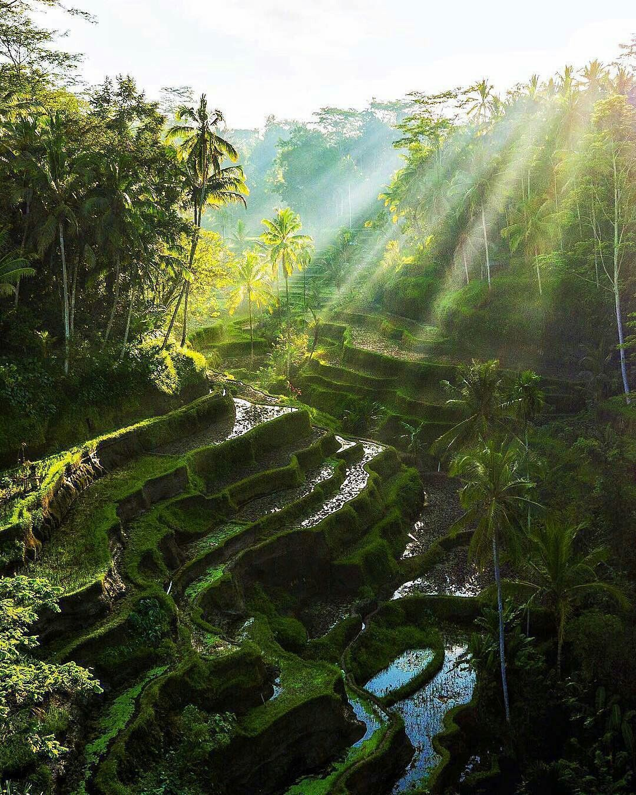

Selain menikmati pemandangan, pengunjung juga bisa berjalan-jalan di antara sawah, berfoto di spot-spot Instagramable, atau mencoba aktivitas seperti ayunan raksasa (Bali Swing). Ada juga kafe dan restoran di sekitar yang menawarkan pemandangan langsung ke sawah.
SEJARAH TEGALALANG RICE TERRACE
Tegalalang Rice Terrace memiliki sejarah yang erat kaitannya dengan sistem irigasi tradisional Bali yang disebut Subak. Subak adalah sistem pengairan sawah yang sudah ada sejak abad ke-9 dan merupakan bagian dari filosofi hidup masyarakat Bali yang disebut Tri Hita Karana, yang menekankan keseimbangan antara manusia, alam, dan Tuhan.
Sawah bertingkat di Tegalalang ini telah digunakan oleh para petani Bali selama berabad-abad untuk bercocok tanam padi. Struktur terasering ini memungkinkan pengairan yang efisien di daerah perbukitan, sehingga pertanian tetap subur dan produktif. Sistem Subak sendiri diakui sebagai Warisan Budaya Dunia oleh UNESCO pada tahun 2012.
Selain sebagai lahan pertanian, Tegalalang Rice Terrace kini menjadi daya tarik wisata karena keindahannya yang khas. Keberadaannya juga menunjukkan bagaimana masyarakat Bali secara turun-temurun menjaga harmoni antara budaya dan alam dalam kehidupan sehari-hari.
SEJARAHISI DI DALAM TEGALALANG RICE TERRACE
Di dalam Tegalalang Rice Terrace, kamu bisa menemukan berbagai hal menarik, selain hanya sawah bertingkat yang indah. Beberapa di antaranya adalah:
🌾1.Sawah Bertingkat dengan Sistem Subak
Tegalalang terkenal dengan terasering sawahnya yang hijau dan subur, yang menggunakan sistem irigasi tradisional Subak. Para petani setempat masih aktif bercocok tanam di sini, jadi kamu bisa melihat langsung bagaimana mereka mengelola sawah secara tradisional.
📸2.Spot Foto Instagramable
Ada banyak tempat dengan latar belakang yang cantik untuk berfoto, mulai dari jembatan bambu kecil di antara sawah hingga pemandangan luas dari atas bukit.
🎢3.Bali Swing (Ayunan Raksasa)
Banyak wisatawan mencoba ayunan raksasa yang menggantung di atas lembah sawah, memberikan sensasi berayun dengan pemandangan spektakuler di sekelilingnya.
🏡4.Warung dan Kafe dengan Pemandangan Sawah
Di sekitar area Tegalalang, terdapat berbagai warung dan kafe yang menawarkan makanan dan minuman sambil menikmati panorama sawah yang indah.
5.Trekking dan Jelajah Alam
Buat yang suka tantangan, kamu bisa menyusuri jalan setapak di antara sawah untuk merasakan langsung keindahan alam dan suasana pedesaan Bali.
6.Pasar Seni dan Kerajinan Lokal
Di sekitar pintu masuk, ada banyak toko suvenir yang menjual kerajinan khas Bali, seperti ukiran kayu, kain batik, dan perhiasan handmade. Tegalalang bukan cuma tempat untuk melihat sawah, tapi juga menawarkan banyak pengalaman seru! Kamu lebih tertarik ke bagian mana?
